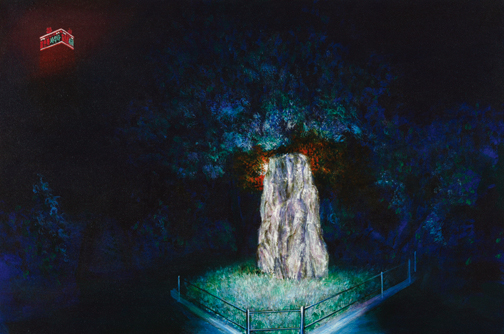
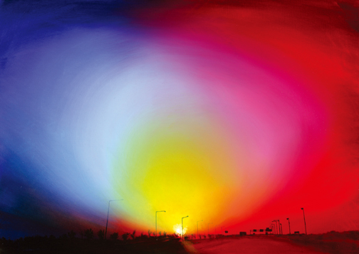
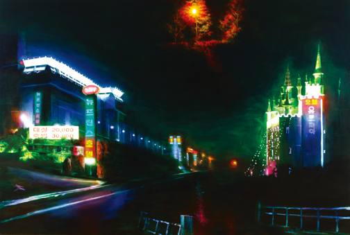
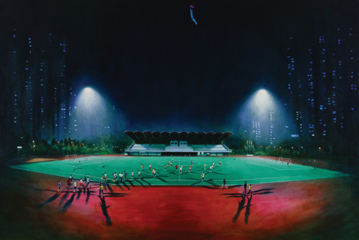
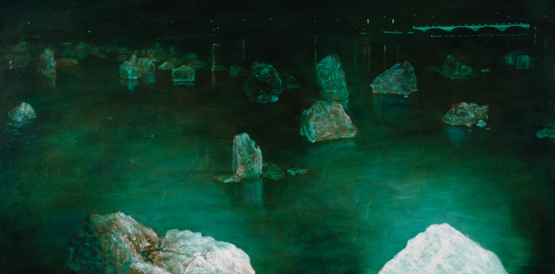

| Next 1 / 2 |
 |
기념비 A Monument 2007 Acrylic on Canvas 60.6x90.9cm |
 |
자유로 Freedom Driveway 2007 Oil on Canvas 65.1x90.9cm |
 |
모텔 Motel 2007 Acrylic on Canvas 130.3x193.9cm |
 |
운동장 Sports Grounds 2007 Acrylic on Canvas 193.9x130.3cm |
근대의 사진, 그리고 현대에 와서는 전자매체의 발달로 현실을 재현하는 역할로서의 미술의 위상은 흔들리기 시작한다. 현대미술은 다른 기계적 복제 수단과의 길항관계 속에서 추상, 구성, 해체로의 길을 걸어왔으며, 그 개념적 난해함으로 악명높은 소통 불능성을 야기해왔다. 특히 국내에서도 1년에 몇차례씩 열리는 대형 미술 전시를 휩쓰는 것은 어안이 벙벙할 정도로 대규모이고 화려한 미디어의 제전이다. 그러나 이러한 스펙타클 문화는 새로운 시각적, 문화적 패러다임을 제시하기 보다는 오락적이고 소비적인 양상에 매몰되기 십상이다. 현대의 전자 미디어는 형식면에서 기존의 재현적 세계관을 근저로부터 무너뜨리고 있지만, 전자 미디어의 전반적인 활용 방식은 재현주의를 더욱 극대화하고 있다. 이 선 영 | 미술과 담론 |
 |
호수공원 Lake Park 2007 Acrylic on Canvas 60x120cm |
항상 그렇다. 그가 그린 것 그대로 혹은 그가 이야기하는 것 그대로만 순진하게 다라 가다보면 어느 틈엔가 길을 잃고 헤매기 십상이다. 공성훈은 수수께끼를 즐긴다. 그가 낸 문제를 하나씩 풀 수 있을 때에만 다음의 문제가 보인다. 그가 제시하는 게임에 관심이 없거나 쉽게 싫증이 난다면 문제해결의 실마리는 영영 나타나지 않을지도 모른다. 공성훈은 사람들의 관습적인 시각과 사고를 비틀거나 뒤집어엎는 방식으로 자신과 자신이 바라보는 우리 사회에 대해 언급하고자 하는 것임에 틀림없다. 몇 년 전 그가 <벽제의 밤>이라는 연작에서 개 그림을 들고 나왔을 때 사람들이 느꼈던 당혹감은 그가 그린 대상이 분명히 개임에도 불구하고 그것이 그냥 개에만 머물고 있지 않다는 사실, 말로 다 설명할 수 없지만 부조리하고 정의롭지 못한 세상에 대한 비아냥거림이 그들을 통해 드러나고 있다는 것, 마치 인간의 숨겨진 본능, 욕망, 두려움, 능청스러움 등을 상징화된 의인화된 존재처럼 여겨진다는 것이었다. 요사이 작가의 이러한 시각은 비밀스럽고 암시적으로 그려진 이상야릇한 풍경화들을 통해 더 여실히 드러나고 있다. 전시 타이틀조차 <교외?여가>라는 사실은 더욱 모순적이다. 얼핏 보았을 때 익숙하게 느껴지는 풍경임에도 불구하고 뭔가 어색하고 불온한 징후가 화면 가득하다. 그의 풍경에서 안온한 휴식을 기대하기란 매우 어렵다. 그의 풍경화에 은신해 있는 부정적 요소들-살짝 발만 내딛어도 깨져 버릴 것 같은 살얼음, 인체에 유해한 전자파를 발산하는 고압선, 싸구려 모텔의 생경한 네온 불빛 등-은 화면 곳곳에서 불안함을 야기시킨다. 야행성인 작가의 눈에 비친 일상적 풍경들이란 자신이 직장과 집을 오가는 길강 늘어선 모텔의 행렬과 모텔을 장식하고 있는 조악한 네온사인, 경쟁적으로 세워진 교회의 십자가, 팔각정, 필리핀 군 참전 기념비 등이 있는 야경이다. 서울과 경기도 북부를 오가는 사람들 대부분이 알고 있거나 기억하는 이 풍경의 리얼리티는 서울에 기생하는 지역이면서 일산 신도시에도 편입되지 못한 어정쩡한 중간지대, 이 곳 거주민들의 정서적 콤플렉스를 고스란히 반영하는 공간이다. 분명히 실재하는 풍경임에도 불구하고 작가는 이 공간이 갖는 리얼리티를 살리기 위해 이쪽과 저쪽, 근경과 원경이 화면 속에서 교묘하게 재구성되는 또 다른 하나의 풍경을 만들어 놓았다. 그러므로 공성훈의 이번 풍경화들은 그의 머릿속에서 재구성된 리얼리티와 판타지가 공존하는 가상의 그림이다. 리얼리티와 판타지의 공존을 잘 보여주는 작품 중에 <운동장>이라는 작품이 있다. 이 작품은 한 지방자치단체에서 운영하는 문화여가 체육시설을 그린 것이다. 이 작품은 여러 가지 소품으로 짜여진 무대 세트처럼 보인다. 늦은 밤 팀을 나눠 축구경기를 하는 사람들, 운동장 외곽을 파워워킹을 하며 줄지어 지나가는 사람들, 그들을 좌우에서 비추는 거대한 조명, 운동장 밖에 신기루처럼 솟아 있는 아파트의 무리들, 운동장 한가운데를 지나가는 비행기 그리고 축제를 나타내는 애드벌룬 등은 잘 만들어진 무대의 소품처럼 보이는 것이다. 작가의 시선 역시 스탠드에 서서 운동장을 내려다보는 각도를 유지하고 있어 마치 연극무대를 보는 관람객의 태도를 연상시킨다. 그렇다면 작가는 무엇을 보고자 한 것일까? 불가능한 높이에서 빛을 비추는 하얀 조명 불빛은 마치 유령처럼 보이고 실제보다 훨씬 더 과장된 고층 아파트는 갑자기 날아드는 비행기와 충돌할 듯하다. 사람들의 그림자는 작가의 말을 그대로 빌려오자면 외계인 혹은 구이용 통닭처럼 그려져 있어 언제 어떻게 희생양이 될지 모른다는 불안감을 불러일으키기에 족하다. 지붕 그림자를 짙게 드리운 텅 빈 스탠드는 정체모를 어떤 위압적인 존재를 연상시킨다. 이런 상황 속에 놓여 있는 사람들의 삶은 ‘어떠한가?'를 작가는 역설적으로 묻고 있다. 너무도 지적인 이 작가의 표현의 범주가 샤반느의 목가적 풍경에서 겸재와 단원의 전통화법까지를 넘나든다 하여도 그의 진의는 저 아래 어느 곳엔가 숨겨져 있음을, 결론적으로 그의 그림은 그의 삶에 연관된 리얼리티를 표상한다는 점을 잊지 말기를. 최은주 | 국립현대미술관 학예연구원 전시리뷰 Art in Culture 2007년 3월호 |